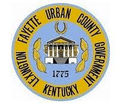

University of Kentucky
Born in Lexington, KY, I attended the University of Kentucky and majored in Fine Art. While developing creative skills that would serve me well throughout my entire career, I also had the incredible opportunity to live a childhood dream.
From 1988–1991, I had the opportunity to be the University of Kentucky “Wildcat” mascot. And while that may seem trivial to some, I can say it was foundational for what I do every day.
You see, I have always been that cheerleader at heart. In college I cheered for my UK teams to win. Today I cheer for professionals (like you) across every industry to win in what they do.
New York Life & financial services
After college I went into the financial services business, where I held the roles of Agent and Registered Representative for New York Life for a number of years. The education I received from working with one of the top financial institutions in the world was invaluable. The communication and sales skills they gave me are what I rely on every day in my career.
After New York Life I worked as a higher education development professional, along with being the Marketing and Government Affairs Director for a niche financial service company. Over a decade, I had the privilege of working with individuals and institutions to improve their effectiveness and to win.
McChord Inc.
After a decade of doing this for others, I created McChord Inc. and set out to speak for, train, and coach as many professionals as possible.

Four terms on Lexington City Council
During that season I had the honor of running for office and serving 4 terms as a city council member for Lexington, KY.
It was during these years that my desire to improve the physical health of individuals and communities across America emerged. Through the construction of trails and health & wellness initiatives, we were able to have a significant impact on obesity, especially childhood obesity.
Legacy Trail & Second Sunday
It was such a joy to construct physical infrastructure like “The Legacy Trail” (9 miles connecting the urban downtown of Lexington to the Horse Park in rural Fayette County) and see people of all ages, even today, walking, running, blading, and biking.
I was also able to partner with the University of Kentucky Extension Office to create a nationally-recognized initiative called “Second Sunday,” where we coordinated road closures on the same day (the second Sunday in October) at the same time (2pm–5pm) and invited people across the Commonwealth to use that closed road infrastructure to exercise.
This multi-year initiative spun off other amazing events like “Second Sunday on the Runway,” where we partnered with Blue Grass Airport to invite the public out to exercise on the new general aviation runway. This event spun off a partnership with the United Way of the Bluegrass to have the “5K on the Runway,” which in turn was picked up by other United Ways across the US.